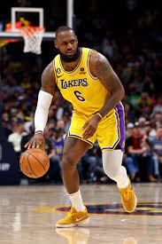
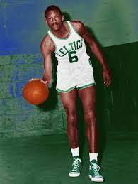

The National Basketball Association, or NBA, is a professional basketball league comprised of 30 teams across North America featuring the best basketball players in the world.
LeBron James is an American basketball player with the Los Angeles Lakers. James first garnered national attention as the top high school basketball player in the country. With his unique combination of size, athleticism and court vision, he became a four-time NBA MVP.
A five-time NBA MVP and a 12-time All-Star, Bill Russell was the cornerstone of the Boston Celtics' dynasty of the 1960s. In 963 career games, Bill Russell averaged an astonishing 22.5 rebounds per game, helping the Celtics win 11 titles during that time.

Michael Jeffrey Jordan (born February 17, 1963) is a former American basketball player. He is widely considered the greatest basketball player of all time. He won six championships and was the Finals MVP 6 times. He played for the Chicago Bulls and the Washington Wizards.